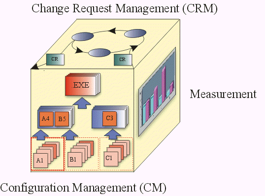

|
The major aspects of a configuration management system usually include the following:
-
Change Request Management (covered
-
Configuration Management (CM)
-
Change Tracking
-
Version Selection
Configuration management systems can also include:
-
Software Manufacture
-
Configuration Status Accounting and Measurement
The following configuration management cube, suggesting their mutual interdependence, serves to iconograph the
major aspects of a configuration management system.

-
Change Request Management (CRM) - addresses the organizational infrastructure required to assess the cost,
and schedule, impact of a requested change to the existing product. Change Request Management addresses the
workings of a Change Review Team or Change Control Board. Within UMF this is handled by the corresponing
project managment process.
-
Configuration Status Accounting (Measurement) - is used to describe the 'state' of the product based on the
type, number, rate and severity of defects found and fixed, during the course of product development. Metrics
derived under this aspect, either through audits or raw data, are useful in determining the overall completeness
status of the project.
-
Configuration Management (CM) - describes the product structure and identifies its constituent configuration
items that are treated as single versionable entities in the configuration management process. CM deals with
defining configurations, building and labeling, and collecting versioned work products into constituent sets and
maintaining traceability between these versions.
-
Change Tracking - describes what is done to elements, for what reason, and at what time. It serves as
history and rationale of changes. It is quite separate from assessing the impact of proposed changes as described
under 'Change Request Management'.
-
Version Selection - the purpose of good 'version selection' is to ensure that right versions of
configuration items are selected for change or implementation. Version selection relies on a solid foundation of
'configuration identification'.
-
Software Manufacture - covers the need to automate the steps to compile, test, and package software for
distribution.
A comprehensive configuration management system covers all configuration management aspects. The purpose is to
allow for an effective configuration management process that:
-
is built into the software development process.
-
helps manage the evolution of the software development work products.
-
allows developers to execute configuration management tasks with minimal intrusion into the development
process.
One goal of the configuration management process is to encourage version control of work products captured in
development tools, and to de-emphasize the resource inefficient production of hardcopy documentation per-se.
Another goal of the configuration management process is to ensure that the level of control applied to each
work product is based on the maturity level of that product. As work products mature, change authorization migrates
from implementer, to subsystem or system integrator, to project manager and ultimately to the customer.
|